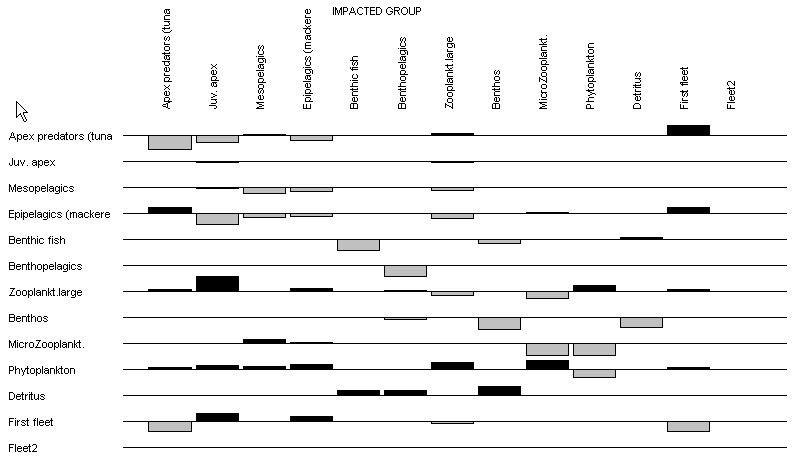

The MTI for living groups is calculated by constructing an n x n matrix, where the i,jth element representing the interaction between the impacting group i and the impacted group j is
MTIi,j = DCi,j – FCj,i Eq. 45
where DCi,j is the diet composition term expressing how much j contributes to the diet of i, and FCj,i is a host composition term giving the proportion of the predation on j that is due to i as a predator. When calculating the host compositions the fishing fleets are included as ‘predators’.
For detritus groups the DCi,j terms are set to 0. For each fishing fleet a ‘diet compositions’ is calculated representing how much each group contributes to the catches, while the host composition term as mentioned above includes both predation and catches.
The diagonal elements of the MTI are further increased by 1, i.e.
MTIi,i = 1 + MTIi,i Eq. 46
The matrix is inversed using a standard matrix inversion routine.
The mixed trophic impact graph can be opened using the Graph of mixed trophic impacts form. The number of group included in the mixed trophic impact graph can be limited using the Show/hide groups on mixed trophic impacts plot form.
Figure 7.8 shows the direct and indirect impact that the very small increase of the biomass of groups mentioned to the left of the histograms (rows) have on the biomass of the other groups mentioned above the histograms (columns). The bars pointing upwards indicate positive impacts, while the bars pointing downwards show negative impacts. The bars should not be interpreted in an absolute sense: the impacts are relative, but comparable between groups.
In this example, the apex predators will have a negative impact on their preferred prey, epipelagic nekton, and an indirect, if slight (0.03, not visible on Figure 7.8 but available on the mixed trophic impact table output by the program) positive impact on the prey of their prey, the larger zooplankton (this effect is known as a ‘cascade’). Further, the impact of the epipelagic nekton on the microzooplankton is slightly positive (0.01), even though the former feeds on microzooplankton directly. This is because the epipelagics also feed on the large zooplankton, and this overrules the direct impact.
Most groups have a negative impact on themselves, interpreted here as reflecting increased within-group competition for resources. Exceptions exist; thus, if a group cannibalizes itself (0-order cycle), the impact of a group on itself may be positive.
The mixed trophic impact routine can also be regarded as a form of ‘ordinary’ sensitivity analysis (Majkowski, 1982). In this system, it can be concluded, e.g., that the impact of the bathypelagics on any other group is negligible: these fishes are too scarce to have any quantitative impacts. This can be seen to indicate that one need not allocate much effort in refining one’s parameter estimates for this group; it may be better to concentrate on other groups.
One should regard the mixed trophic impact routine as a tool for indicating the possible impact of direct and indirect interactions (including competition) in a steady-state system, not as an instrument for making predictions of what will happen in the future if certain interaction terms are changed. The major reason for this is that changes in abundance may lead to changes in diet compositions, and this cannot be accommodated with the mixed trophic impact analysis.

Figure 7.8. Mixed trophic impacts showing the combined direct and indirect trophic impacts that an infinitesimal increase of any of the groups on the left is predicted to have on the groups in the columns.